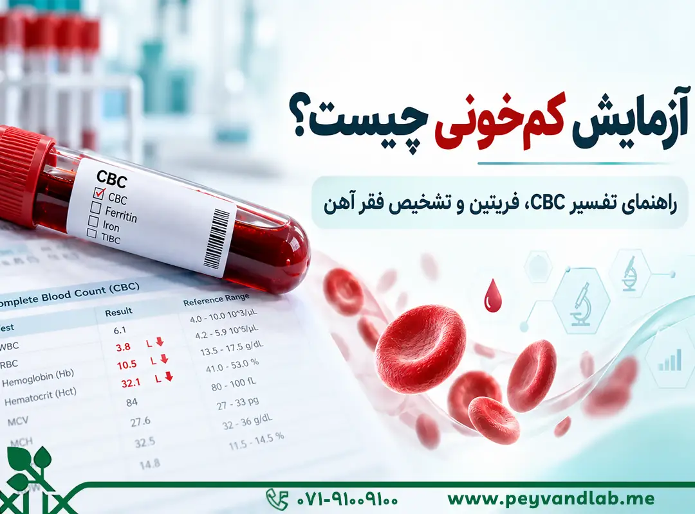
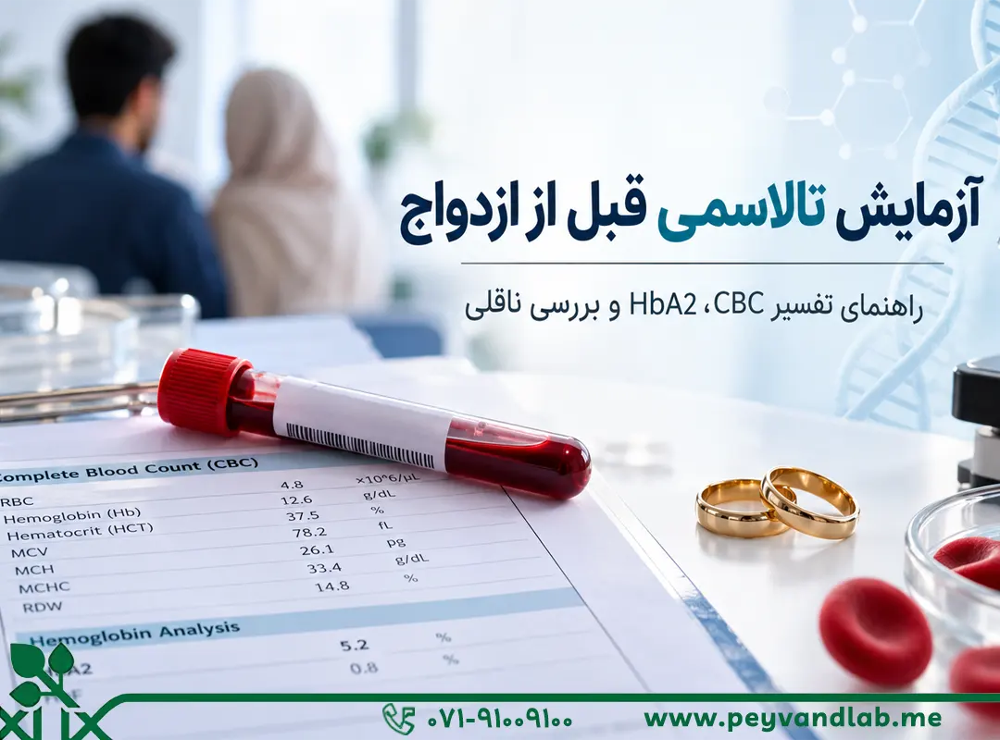
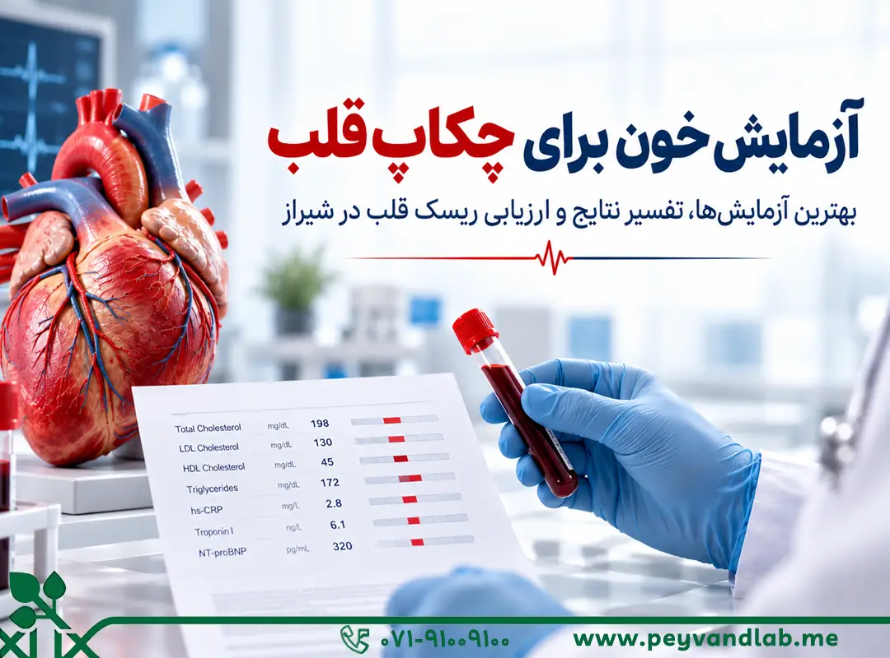

آزمایش کمخونی؛ از CBC تا فریتین
آنچه پیش از آزمایش و دریافت نتیجه باید بدانید.
یک قدم نزدیکتر به سلامت و آرامش
نام فارسی یا اختصار آزمایش را جستوجو کنید.
مراقبت دقیق، در هر بخش
قند، چربی، کبد و کلیه
خونشناسی و انعقاد خون
بررسیهای ژنتیکی و ارثی
تیروئید، باروری و هورمونها
کشت و بررسی عوامل عفونی
بررسی تخصصی هموگلوبین
راهنماهای کاربردی مجله سلامت پیوند

آنچه پیش از آزمایش و دریافت نتیجه باید بدانید.

آشنایی با مسیر بررسی CBC و HbA2.

آشنایی با آزمایشها و اهمیت ارزیابی عوامل خطر.
این وباپ را به صفحه اصلی تلفن خود اضافه کنید.
در آیفون: Share سپس Add to Home Screen. در اندروید: منوی مرورگر سپس Install app یا افزودن به صفحه اصلی.